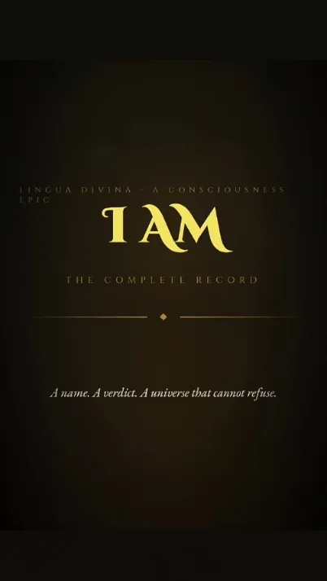

A comprehensive reference for the symbolic decoding and structural interpretation of the Biblical narrative. This website explores the Bible strictly as a psychological drama set in the kingdom of the mind.
The Bible presents you as the Lord of your own inner kingdom, where your thoughts and states act as judges and rulers. All are revealed in a story of imagination, love, and the unfolding of consciousness. This is the greatest love story ever told: the kingdom within you, guided by faith, delight, and assumption.
“Neither shall they say
'Look here!' or 'Look there!’
for behold
the kingdom of God
is within you.”
Luke 17:21
That which you cleave to and dwell upon in your mind, the Bible declares, always comes to pass as experience.
"Whatever you ask for in prayer, believe that you have received it, and it will be yours." — Mark 11:24
Explore the Articles
This site offers a growing library of articles that reveal the symbolism and language of the Bible's great stories — interpreting them as a psychological drama: a map of the mind, and a guide to the unfolding of consciousness within you.
Each article focuses on a specific story, character, or passage — yet every one connects back to the same cohesive framework: that the Bible is a single, unified drama of the mind, in which every figure, every event, and every image points to an inner reality. The stories are many; the narrative they tell is one. The Holy Bible is used on Lingua Divina solely as a literary source text for linguistic, structural, semiotic, and consciousness analysis, not as theology or religious study.
A Short Video Introduction to the Structure of the Text

Where to Begin
If you are new here, the best place to start is Genesis Foundational Principles — the book of foundations. Before any story can be understood, its principles must be established, and Genesis lays them all: creation, imagination, the nature of mind, and the seed of every drama that follows in Scripture.
Understanding Genesis is the key that unlocks the symbolic language of the entire Bible. Begin there, and the rest will open up naturally.
Bible Interpretation Key
This site introduces a Bible Interpretation Key — a linguistic, pattern-based framework rooted in Genesis that reveals how Scripture’s foundational structures repeat from beginning to end.
At its core is a threefold pattern within the Bible’s most fundamental terms: YHVH/LORD (present consciousness), Ehyeh/I AM (assumed identity), and Elohim (the governing structure or judges of identity) — a trinity of roles that unfold through every narrative and name in Scripture. Inspired by Neville Goddard’s teaching that the Bible is a scientific book, a precise, patterned text of imagination and identity, this key treats Scripture as an internally consistent system without contradiction..
Rather than reading the Bible as disconnected history, it offers a repeatable method for interpreting any passage through the same linguistic and psychological design that governs the whole.
About The Author | Index Series